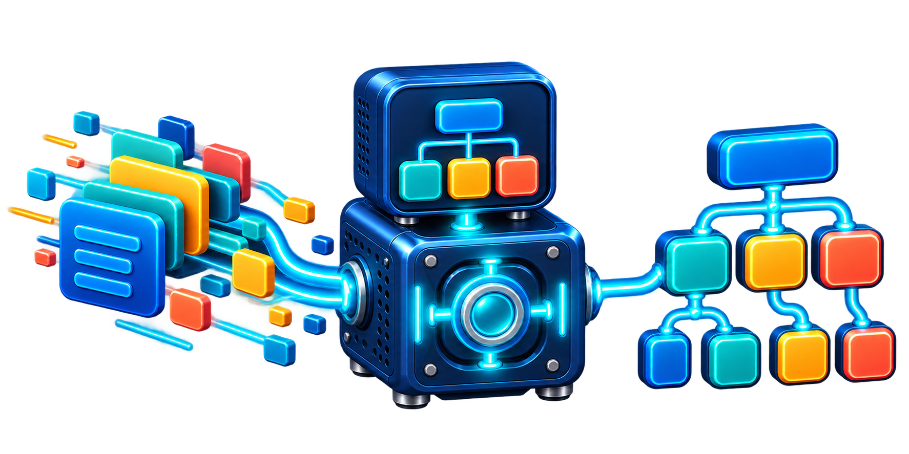
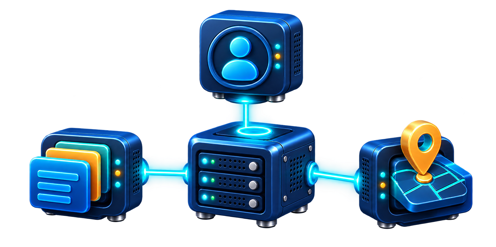
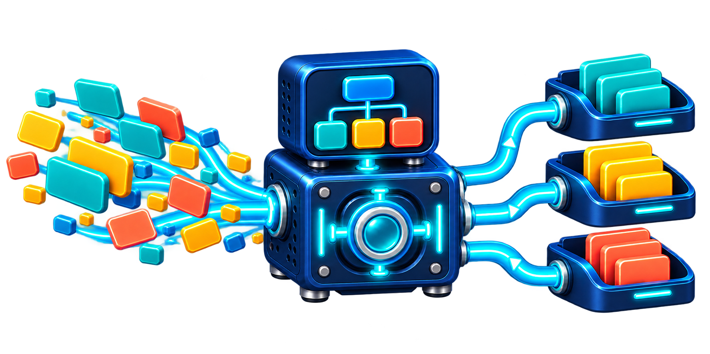

◉
ユーザー
だれに？
情報を、迷わず届くかたちに。

INFORMATION FLOW / ばらばらの情報を、見つけやすく、理解しやすく、行動しやすい体験へ変換する。
IAは「考える材料」と「整える仕組み」をつなぐ設計です。
だれに？
なにを？
どんな場面で？
まとめる
名前をつける
案内する
見つける

同じ情報でも、届ける相手・情報そのもの・利用する状況が変われば、最適なかたちは変わります。IAはまず、この3つの信号を拾います。
メモ、資料、画面案をそのまま持ち込み、情報の流れを設計します。

順番や正しさを気にせず、手元にある情報をカードにします。
「だれに？」「なにを？」「どんな場面で？」をカードごとに書きます。
まとまり、名前、道筋、探し方を決め、ページに反映します。
分ける。名付ける。キーワードから、情報のつながりを見つけよう。
浮遊するカードを分類して、自分のラベルを模範例と比べてみよう。
練習アプリを起動する →